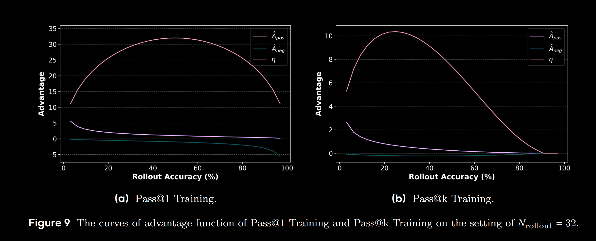

论文题目 (Pass@k Training for Adaptively Balancing Exploration and Exploitation of Large Reasoning Models)。这里主要针对论文中的一小节结论进行推导，即从整个Rollout样本进行Bootstrap Sampling的采样奖励，推导到解析奖励。
- 问题的重述：我们要解决什么问题？为什么需要解析解？
- 定义与前提：清晰地定义推导所需的变量和基本假设。
- 推导过程：分步进行数学推导，从组的统计特性出发，最终得到单个答案的期望优势。
- 解析解的公式与解读：呈现最终的公式，并解释其内在含义。
意义与局限性分析：探讨解析解为何优越，以及它并未解决的问题。
1. 问题的重述
在自助采样（Bootstrap Sampling）方法中，我们通过对 \(N\) 个 rollout 答案进行有放回的随机抽样来构造大量的组，然后计算每个答案在所有它所属的组中的平均优势。这个过程虽然高效，但本质上仍是一个蒙特卡洛模拟。其结果会因为随机采样的不同而产生方差，导致训练过程存在不必要的噪声。
“解析解”的目标，就是彻底消除这个采样过程，直接通过数学公式计算出，在所有可能的、无限多的 Bootstrap 组中，一个“正确答案”和一个“错误答案”期望（Expected）获得的优势值究竟是多少。
一旦我们有了这个公式，对于一次包含 \(N\) 个答案的 rollout，我们只需要数出其中有多少个是正确的（\(N_c\)），就可以立即、确定地为每个正确答案和错误答案分配一个精确的优势值。这个过程是确定性的，无方差的，也是最高效的。
2. 定义与前提
在推导开始前，我们必须明确以下变量和假设：
基本参数:
\(N\): 一次 rollout 生成的候选答案总数。
\(k\): 每个组的大小（即 Pass@k 中的 k）。
\(N_c\): 在 \(N\) 个答案中，正确答案的数量。
\(N_w\): 在 \(N\) 个答案中，错误答案的数量，显然 \(N_w = N - N_c\)。
采样假设:
我们遵循 Bootstrap 的设定，即从 \(N\) 个答案中有放回地随机抽取 \(k\) 次，来组成一个组。
奖励与优势定义: * 一个组 \(G\) 的奖励 \(r(G)\) 定义为： \[ r(G) = \begin{cases} 1 & \text{if } G \text{ contains at least one correct answer} \\ 0 & \text{if } G \text{ contains only wrong answers} \end{cases} \] * 优势值（Advantage）通常被定义为奖励与一个基线（baseline）的差值。为了降低方差，一个常见的做法是进行标准化，即： \[ A(G) = \frac{r(G) - \mu_r}{\sigma_r} \] 其中 \(\mu_r\) 是所有可能组的平均奖励，\(\sigma_r\) 是所有可能组的奖励的标准差。
我们的最终目标是计算 \(A_{pos}\)（一个正确答案的期望优势）和 \(A_{neg}\)（一个错误答案的期望优势）。
3. 推导过程
步骤一：计算组奖励的统计特性 (\(\mu_r\) 和 \(\sigma_r\))
首先，我们需要计算在所有 \(N^k\) 种可能的组中，奖励的均值和标准差。
一个组是“负面组”（奖励为0）的概率： 一个组的奖励为0，当且仅当它包含的所有 \(k\) 个答案都来自于 \(N_w\) 个错误答案中。由于是有放回抽样，每次抽样抽到错误答案的概率是 \(p_w = N_w / N\)。因此，连续 \(k\) 次都抽到错误答案的概率为： \[ P(r(G)=0) = \left(\frac{N_w}{N}\right)^k = p_w^k \]
一个组是“正面组”（奖励为1）的概率： 这是“负面组”的对立事件，所以概率为： \[ P(r(G)=1) = 1 - P(r(G)=0) = 1 - p_w^k \]
计算平均奖励 \(\mu_r\)： 由于奖励是一个只有0和1两个取值的伯努利分布，其期望（均值）就是取值为1的概率： \[ \mu_r = E[r(G)] = 1 \cdot P(r(G)=1) + 0 \cdot P(r(G)=0) = 1 - p_w^k \]
计算奖励方差 \(\sigma_r^2\) 和标准差 \(\sigma_r\)： 对于伯努利分布，方差为 \(p(1-p)\)。因此： \[ \sigma_r^2 = \mu_r(1 - \mu_r) = (1 - p_w^k) p_w^k \] 标准差为： \[ \sigma_r = \sqrt{(1 - p_w^k) p_w^k} \]
步骤二：计算两种组的优势值
现在我们可以计算出“正面组”和“负面组”分别对应的优势值。
正面组的优势 \(A_{group\_pos}\) (奖励为1): \[ A_{group\_pos} = \frac{1 - \mu_r}{\sigma_r} = \frac{1 - (1 - p_w^k)}{\sqrt{(1 - p_w^k) p_w^k}} = \frac{p_w^k}{\sqrt{(1 - p_w^k) p_w^k}} = \sqrt{\frac{p_w^k}{1-p_w^k}} \]
负面组的优势 \(A_{group\_neg}\) (奖励为0): \[ A_{group\_neg} = \frac{0 - \mu_r}{\sigma_r} = \frac{-(1 - p_w^k)}{\sqrt{(1 - p_w^k) p_w^k}} = -\sqrt{\frac{1-p_w^k}{p_w^k}} \]
步骤三：计算单个答案的期望优势
这是最关键的一步。我们要计算一个给定的答案（无论是正确的还是错误的），它在所有可能包含它的组中的期望优势值是多少。
- 对于一个正确的答案 (\(s_{pos}\)): 思考一下，任何一个包含 \(s_{pos}\) 的组，其奖励必然是多少？ 答案是 1。因为根据定义，只要组里至少有一个正确答案，奖励就是1。 因此，一个正确的答案 只会 出现在“正面组”中。它永远不可能属于一个“负面组”。 所以，它的期望优势就是正面组的优势： \[ A_{pos} = E[A(G) | s_{pos} \in G] = A_{group\_pos} \]
- 对于一个错误的答案 (\(s_{neg}\)): 一个错误的答案 \(s_{neg}\) 则既可能出现在“正面组”中，也可能出现在“负面组”中。我们需要计算这两种情况的条件概率。 一个包含 \(s_{neg}\) 的组是“负面组”的条件概率是多少？ 这个组是负面的，意味着除了 \(s_{neg}\) 本身是错的之外，我们为该组抽取的另外 \(k-1\) 个成员也必须都是错误的。每次抽取抽到错误答案的概率是 \(p_w\)。因此，另外 \(k-1\) 次全部抽到错误答案的概率是 \(p_w^{k-1}\)。 \[ P(r(G)=0 | s_{neg} \in G) = p_w^{k-1} \] 相应地，一个包含 \(s_{neg}\) 的组是“正面组”的条件概率是： \[ P(r(G)=1 | s_{neg} \in G) = 1 - p_w^{k-1} \] 现在，我们可以计算 \(s_{neg}\) 的期望优势，即用这两种情况的概率对其对应的组优势进行加权平均： \[ A_{neg} = E[A(G) | s_{neg} \in G] = P(r(G)=1 | s_{neg} \in G) \cdot A_{group\_pos} + P(r(G)=0 | s_{neg} \in G) \cdot A_{group\_neg} \]
4. 解析解的公式与解读
将步骤二和步骤三的结果整合，我们就得到了最终的解析解公式：
\[ A_{pos} = \sqrt{\frac{p_w^k}{1-p_w^k}} \]
\[ A_{neg} = (1 - p_w^{k-1}) \sqrt{\frac{p_w^k}{1-p_w^k}} - p_w^{k-1} \sqrt{\frac{1-p_w^k}{p_w^k}} \]
其中 \(p_w = N_w / N = (N-N_c)/N\)。
解读:
输入: 这些公式的输入仅仅是 \(N\)（超参数）, \(k\)（超参数）, 和 \(N_c\)（单次 rollout 的结果）。
\(A_{pos}\): 正确答案的优势值 \(A_{pos}\) 永远为正。它的值仅与全局的失败概率 \(p_w\) 和组大小 \(k\) 有关。当 \(p_w\) 很高时（即 rollout 中大部分都失败了，问题很难），\(A_{pos}\) 会变大，给予稀有的正确答案更强的正向激励。
\(A_{neg}\): 错误答案的优势值 \(A_{neg}\) 的构成更有趣。它由两部分组成：
- 第一部分是正的：\((1 - p_w^{k-1}) A_{group\_pos}\)。这代表了它“沾光”了（与正确答案分到一组）而获得的奖励。
- 第二部分是负的：\(p_w^{k-1} A_{group\_neg}\)。这代表了它“拖后腿”了（与其他错误答案组成失败小组）而受到的惩罚。
动态平衡: \(A_{neg}\) 的最终符号（正或负）取决于这两部分的大小。在某些情况下（例如，正确答案很多，\(p_w\) 很低），\(A_{neg}\) 甚至可能为正！这意味着，即使一个答案是错的，但如果它是在一个“整体表现很好”的 rollout 中产生的，它仍然可能获得微弱的正向激励。这正是 Pass@k 训练鼓励探索的精髓所在——它奖励了那些发生在“有希望的探索区域”（高 \(N_c\)）中的“有价值的失败”。
Pass@1等于GRPO:
- 奖励设定: 对单个答案 \(x_i\) 进行评估。
- 如果 \(x_i\) 正确，奖励 \(R(x_i) = 1\)。
- 如果 \(x_i\) 错误，奖励 \(R(x_i) = 0\)。
- 均值与标准差: 基于 \(N\) 个 rollout 的结果，计算所有奖励的均值 \(\mu_R\) 和标准差 \(\sigma_R\)。
- 均值 \(\mu_R = \frac{1}{N} \sum_{i=1}^{N} R(x_i) = \frac{N_p}{N}\) (即 rollout 的准确率)。
- 方差 \(\sigma_R^2 = E[(R-\mu_R)^2] = \mu_R(1-\mu_R) = \frac{N_p}{N}(1-\frac{N_p}{N}) = \frac{N_p N_n}{N^2}\)。
- 标准差 \(\sigma_R = \sqrt{\frac{N_p N_n}{N^2}}\)。
- 优势计算: 优势被定义为标准化后的奖励。
- 对于一个正确的答案 (Positive Response)，其优势为： \[A_p^{\text{standard}} = \frac{R_{\text{correct}} - \mu_R}{\sigma_R} = \frac{1 - N_p/N}{\sqrt{(N_p N_n)/N^2}}\]
- 对于一个错误的答案 (Negative Response)，其优势为： \[A_n^{\text{standard}} = \frac{R_{\text{wrong}} - \mu_R}{\sigma_R} = \frac{0 - N_p/N}{\sqrt{(N_p N_n)/N^2}}\]
 \(A_{neg}\) 代表负奖励，\(A_{pos}\) 代表正奖励，这里 \[ \eta = N_{\text{pos}} \times \left| \hat{A}_{\text{pos}} \right| + N_{\text{neg}} \times \left| \hat{A}_{\text{neg}} \right| \]。
5. 意义与局限性分析
意义:
- 效率与稳定性：解析解将 Pass@k 训练的计算复杂度从与 Bootstrap 样本数相关，降低到仅需一次 rollout 和一次公式计算。这极大地提升了效率。同时，它消除了采样方差，使得训练过程更平滑、稳定，如论文图5所示。
- 理论完备性：它为 Pass@k 训练提供了坚实的数学基础，证明了其奖励机制不是一个临时的启发式规则，而是可以在期望意义上被精确计算的。
- 可分析性：拥有了优势的精确函数形式，研究者才得以进行更深入的分析，例如绘制优势函数曲线（图9），并最终引出“隐式奖励设计”这一更广义的范式。没有解析解，这些分析将无从谈起。
潜在问题或未解决的方面:
- Rollout 成本：解析解虽然优化了优势计算的步骤，但它并没有改变 Pass@k 训练需要较大 rollout 数量（\(N\)）的前提。生成 \(N\) 个候选答案的计算开销依然是该方法的主要成本来源。
- 假设的局限性：该推导基于一个理想化的“有放回均匀采样”模型。虽然这与 Bootstrap 的定义一致，但它是否是激励模型探索的最优方式，仍然是一个开放问题。
- 信誉分配的粒度：解析解将所有正确答案赋予完全相同的优势，所有错误答案也赋予完全相同的优势。它无法区分一个“差一点就对”的错误答案和一个“错得离谱”的答案。虽然 Pass@k 整体上缓解了这个问题，但在理论层面，这种平等的信誉分配仍然是粗粒度的。